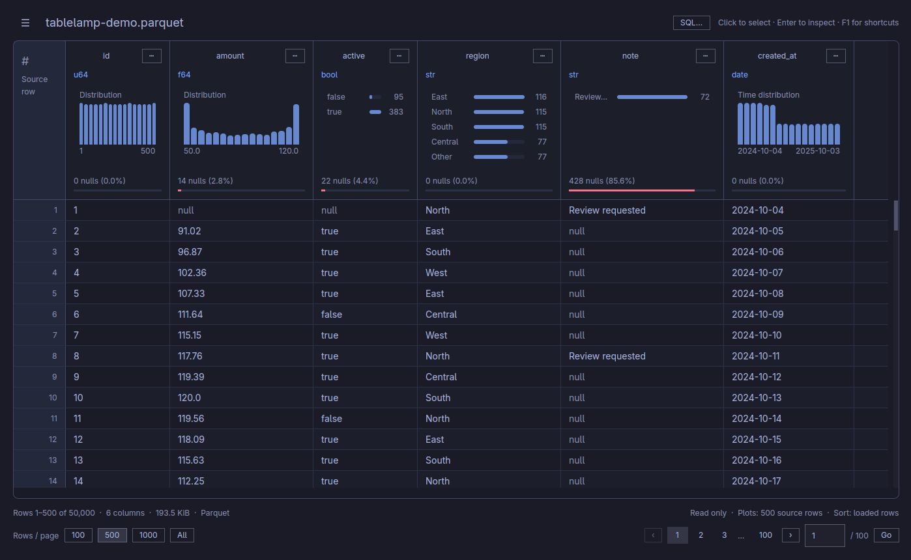
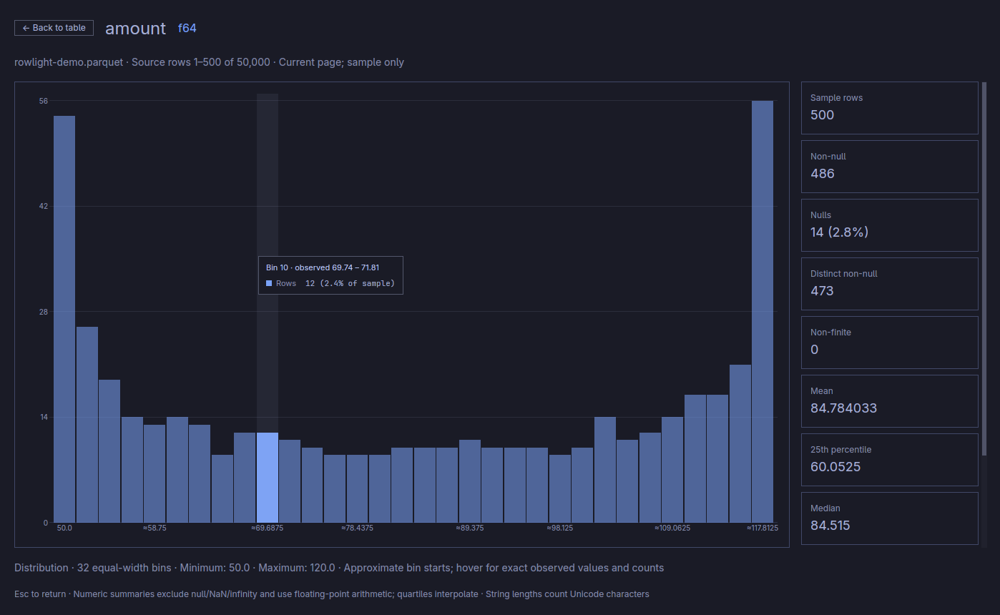

Large files. Small steps.
Browse in pages of 100, 500, or 1,000 rows, with virtual scrolling for rows and columns. All mode checks a memory budget before loading.
How paging worksA little clarity for your data
A small desktop viewer for Parquet, Arrow, CSV, and TSV.
Open a file. See its shape. Explore its rows.

Real desktop app screenshot, using synthetic data.
01 / From file to understanding
Column types, missing values, and distributions, right where you need them. Follow a question without leaving your data behind.
Expand a distribution to explore its values and statistics. Histograms for numbers and dates. Frequency bars for categories and booleans.
Charts describe the displayed rows. File overview takes a bounded sample across the original file.
Explore the details
Browse in pages of 100, 500, or 1,000 rows, with virtual scrolling for rows and columns. All mode checks a memory budget before loading.
How paging worksFind a column, inspect a long cell, or copy a selection. Original column order and source row numbers keep you oriented. Your file stays unchanged.
Inspect and copy02 / Follow your question
Query your open file or local Hive Parquet folder as data. Select the columns you need, filter records, or sort across the query source.
dataSQLSELECT region, AVG(amount) AS average
FROM data
WHERE active = true
GROUP BY region
ORDER BY average DESCIllustrative query · runs in the desktop app
03 / Right at home
These four previews are just examples. On Omarchy, Rowlight follows your current desktop theme, including custom palettes and live changes. Elsewhere, choose light or dark, or follow your system.
Try a palette here. It changes this website and the app screenshot; your desktop settings stay yours.
Less setup. More insight.
Free to use. MIT licensed. Built in the open.
Rowlight 0.1.0-alpha.1 is available. An early, unsigned alpha for Linux and Windows. Choose a download below and verify its checksum before installing.
Release notesLINUX / X64
Archive with a per-user installer.
Ubuntu 24.04 / glibc 2.39+, Wayland or X11, and Vulkan.
WINDOWS / X64
Per-user installer or portable ZIP.
Windows 10 or later, with a DirectX 11 graphics driver.
The alpha is unsigned; Windows may show a publisher warning. Verify downloads against SHA256SUMS; checksums verify integrity, not publisher identity. macOS is experimental community tooling, with no official downloads.
The source and development guide are on GitHub.
No. Rowlight is read only. Sorting, filtering, querying, and copying leave your source data unchanged.
Header charts summarize the displayed rows, capped at 1,000 rows in All mode. File overview samples up to 1,000 rows across 16 evenly spaced windows of the original source. Large-file charts are previews, not exact whole-file statistics.
Clicking a column sorts the loaded page. In All mode, it sorts all loaded rows. Use SQL with ORDER BY to sort across the complete query source.
Cloud builds open remote Parquet from S3, Azure, GCS, and HTTP(S), using existing provider credentials. Remote folders and Iceberg are not supported. Local Hive Parquet folders are supported.
No. Omarchy adds live palette following on Linux. Rowlight also works on other compatible Linux desktops and Windows, with system light/dark appearance and an explicit choice in Settings.